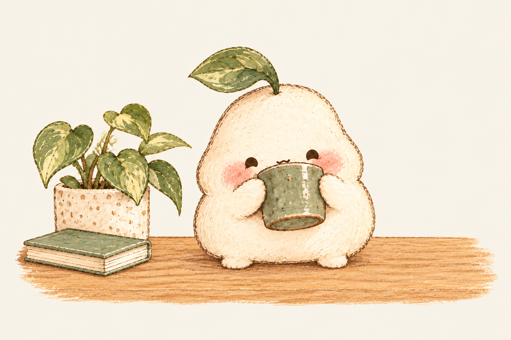
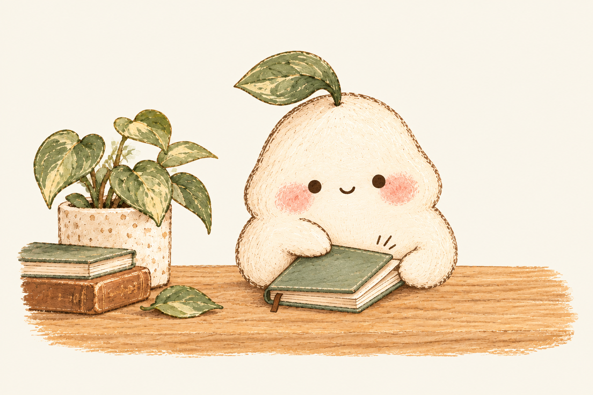
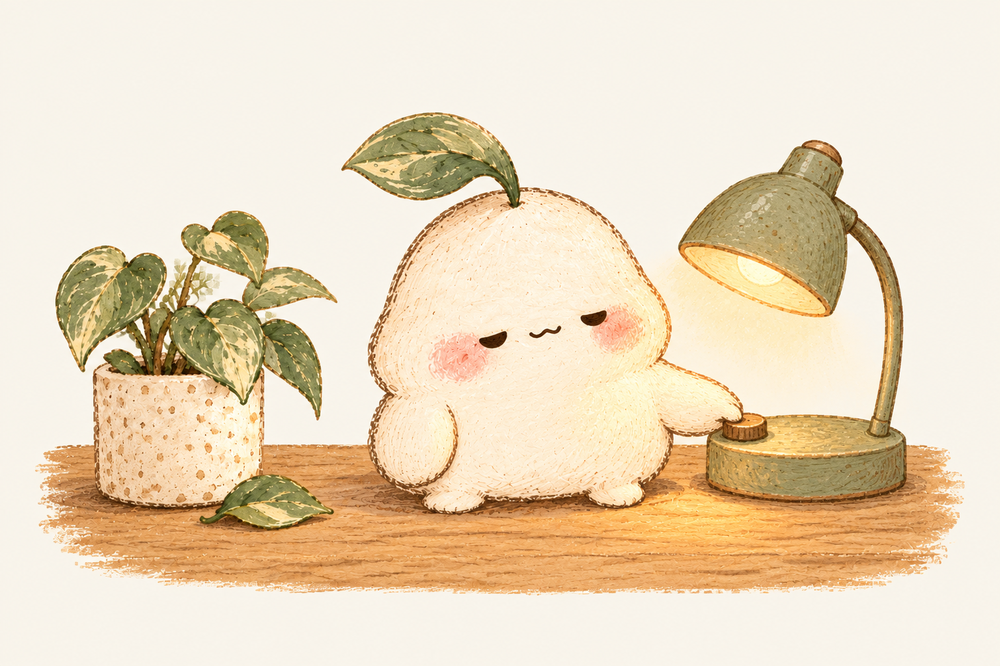

喝两口，再继续
拿起手边的杯子，喝两口水，再放回去。
角色延续小纸团；参考收藏中的日常场景组织方式，以柔和手绘质感展开。

拿起手边的杯子，喝两口水，再放回去。

把暂时不用的一本本子合上，放到桌角。

准备休息的话，把台灯调柔和一档。
已在此刻 0.8.1 独立临时配置中验证动作对应。静态浅底图，不是透明图片或动画。生成工具：内置 imagegen；豆包、WorkBuddy 未实测。收藏本轮连接失败，来源为既有阅读记录和本地原始参考。